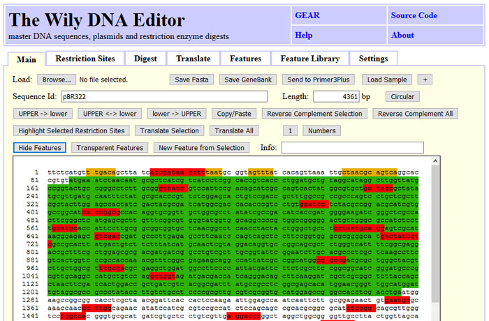
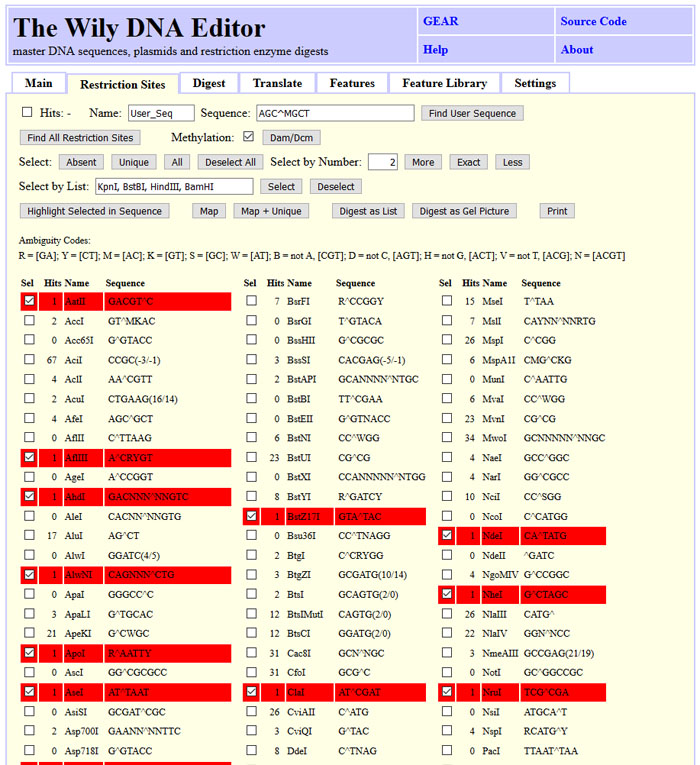
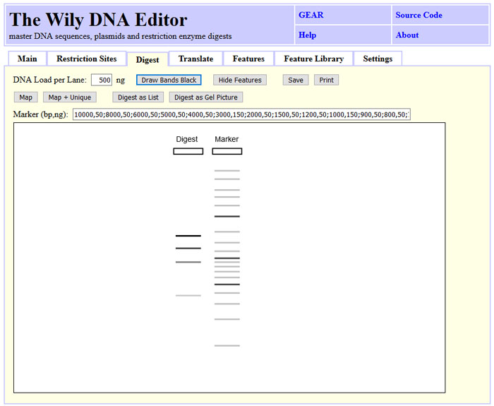
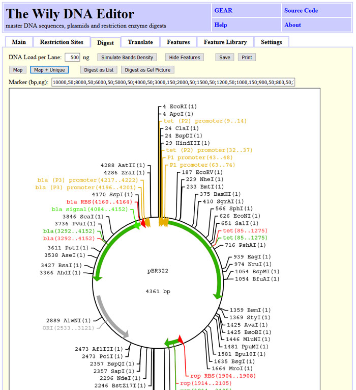
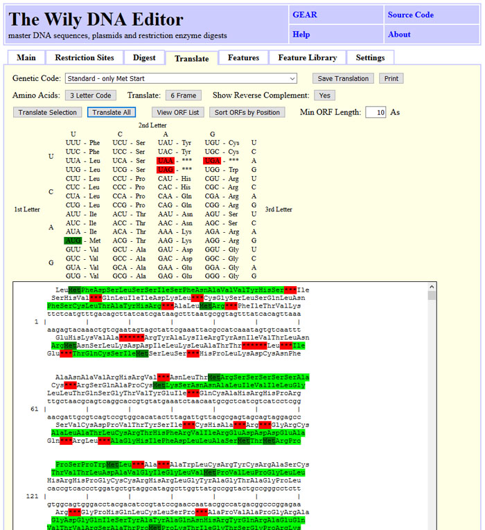
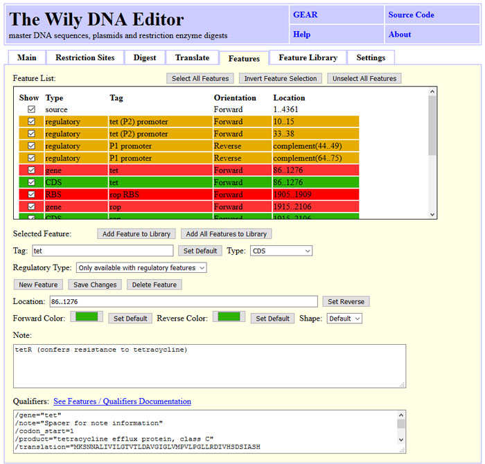

|
The Wily DNA Editor master DNA sequences, plasmids and restriction enzyme digests |
GEAR | Source Code |
| Back | About |
...running with pure JavaScript in your browser - no need to install anything. The
use of the tool should be intuitive. Paste a DNA sequence in the main field and try
out to modify it using the buttons on top.
All calculation happens on your machine. You can load and save sequences in fasta
and genbank format. Pictures can be saved as html or svg files to disk and modified
for publication.
If you encounter any issues, find bugs, experience unintended or surprising behavior, please drop us a note and give us the chance to improve Wily. We like to enhance Wily to match users needs and welcome feature requests.
Please submit a new issue at GitHub or send us a e-mail: wily(at)wily-dna-editor.com
The Wily-DNA-Editor at wily-dna-editor.com
The Wily-DNA-Editor at gear-genomics.com/wily-dna-editor
Source code is available at https://github.com/gear-genomics/wily-dna-editor.

DNA sequences can be loaded into wily using the GeneBank or Fasta format.
Alternatively, DNA sequences can be pasted in or copied out. Wily will remove
numbers and non-IUPAC characters. This can be handy to strip numbers while copying
content from one web interface to the input of a other webinterface. The main tab
allows to reverse-complement the entire DNA or a selection. The DNA sequence may be
labled using upper/lower case. Features and restriction sites can color-code the
sequence. Clicking at a feature or a restriction site will update the info field
with matching information.
The screenshot state can be obtained by clicking "Load Sample", "Tab: Restriction Sites", "Find All", "Unique", "Highlight Selected in Sequence" and "Show Features" back on the main tab.

First, restriction sites have to be found by clicking "Find All". Number are updated
and dedicated subsets like unique, absent or a defined number of cuts can be selected.
The selection can be adapted manually to the needs. Selected restriction sites can be
highlighted in the DNA sequence or used for digest. "Digest as List" will provide a
list of the cut site positions and the fragment length.
The screenshot state can be obtained by clicking "Load Sample", "Tab: Restriction Sites", "Find All" and "Unique".

Agarose gel images of restriction digests can be simulated by clicking "Digest as
Gel Picture" either on the "Restriction Sites" or the "Digest" tab. An individual
marker can be used by modifying the "Marker" field. Band band indensity is simulated
based on fragment size or the bands are drawn black by triggering "Draw Bands Black".
The image can be saved as SVG file or printed out.
The screenshot state can be obtained by clicking "Load Sample", "Tab: Restriction Sites", "Find All", selecting "AclI" and "Digest as Gel Picture".

DNA sequences can be visualized as maps. Selected restriction sites and features are
shown with the position. The features can be hidden using "Hide Features". The image
can be saved as SVG file or printed out.
The screenshot state can be obtained by clicking "Load Sample", "Tab: Restriction Sites", "Find All" and "Map + Unique".

The DNA sequence can be translated into a prtein sequence. The user can choose between
one, three or six frame translation with the "6 Frame" button. One letter amino acid
code is availabe with the "3 Letter Code" button. Start codons are shown in dark green,
stop codons in red and open reading frames in light green.
Alternatively, a list of open reading frames can be shown by clicking "View ORF List".
This list can be sorted by ORF position or length.
The screenshot state can be obtained by clicking "Load Sample" and "Translate All".

DNA sequences can be annotated using features. The tab "Features" shows the features of
the current sequence. Frequently used features can be copied into a "Feature Library"
which is stored permanently and can be used to annotate known features in unknown DNA
sequences. The color and shape of the features can be adapted to the users preference.
Wily will use a default set for common feature types. The "Features" are saved in
Genebank format with the DNA sequence. The "Feature Library" is stored in the browsers
local storage. It is strongly adviced to save the library on local disk by clicking
"Save Library". The obtained file can be shared within labs, between computers and
reloaded using "Add Features from File:". "Reload Library" reads the library from
local storage. This is usefull if the library was modified in a different Wily window
on the same browser.
The screenshot state can be obtained by clicking "Load Sample", "Tab: Features" and selecting CDS tet.